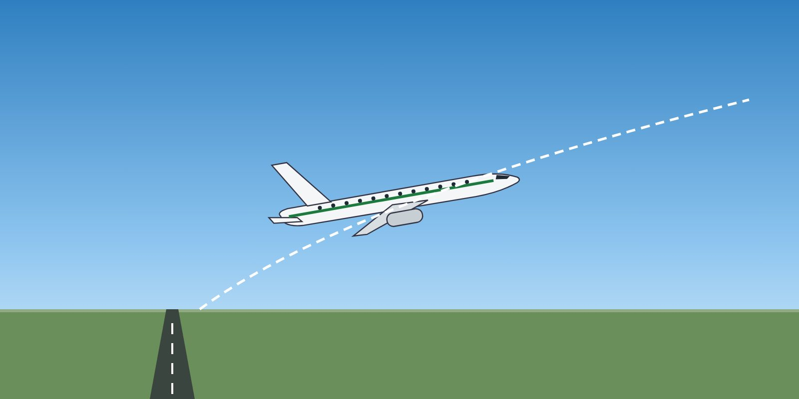

Module 2 · PBN Operations
Lesson 03: RNAV Departures, Arrivals and En-route Operations
Lesson narration
Checking for narration…
Learning objectives
- Fly RNAV SIDs and STARs correctly.
- Apply flight technical error limits.
- Manage contingencies on RNAV routes.

Before departure
- Check that the aircraft and crew are approved and the equipment required by the MEL is operational.
- Load and cross-check the SID: waypoints, fly-by and fly-over points, altitude and speed constraints.
- Brief the procedure and any changes that ATC may give (e.g. direct-to clearances).
Flying the procedure
- Use the lateral navigation mode (LNAV) and the flight director or autopilot, as the SOP requires, to keep the flight technical error small — typically within half the navigation accuracy (for RNAV 1 / RNP 1: within 0.5 NM).
- Monitor the cross-track deviation and the navigation performance indications.
- Respect the published altitude and speed constraints — they are part of the procedure.
Contingencies
- If the navigation performance cannot be met (alert, loss of GNSS, system failure), inform ATC — “unable RNAV due equipment” or the appropriate phrase — and request an alternative clearance.
- Follow the QRH / FCOM procedure for the navigation failure.
- Report the event.
Key takeaways
- Load and cross-check the SID or STAR, including constraints.
- Keep flight technical error within half the navigation accuracy.
- If performance is lost, tell ATC and request another clearance.
Knowledge check
On an RNAV 1 SID, the lateral flight technical error should normally be kept within: